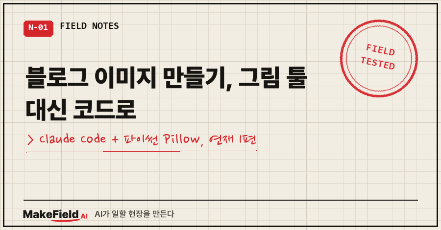
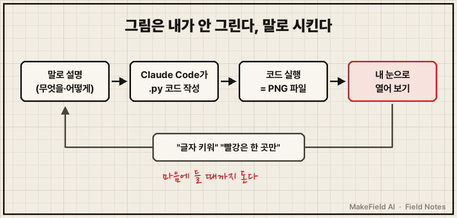
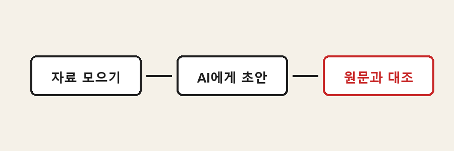
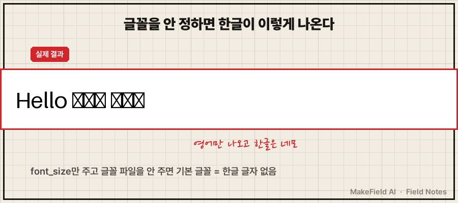

얼마 전에 이런 문의를 받았어요.
"블로그 이미지들, 어떤 툴로 작업하세요?"
답부터 드리면 그림 툴은 안 씁니다. Claude Code한테 말로 설명하면, Claude Code가 파이썬 코드를 짜고 그 코드가 그림 파일(PNG)을 만들어요. 그림을 그리는 도구는 파이썬의 이미지 라이브러리 Pillow고요.
포토샵, 캔바, 이미지 생성 AI.. 셋 다 이 블로그 그림에는 안 들어갔습니다.
지금 제 폴더엔 글마다 하나씩 만든 그림 스크립트가 141개 쌓여 있어요.
질문 주신 분처럼 궁금해하실 분이 더 있을 것 같아서, 아예 3편짜리 연재로 풀어 보려고 합니다.
- 1편(이 글): 왜 코드로 그리나, 첫 그림 한 장 뽑기
- 2편: 그림마다 톤이 따로 노는 문제, 색 정해 두는 파일 하나
- 3편: 제목만 넣으면 나오는 대표 이미지(썸네일)
저는 제조 현장에서 자동화·제어 일을 15년째 하는 엔지니어예요. 디자인은 배운 적이 없습니다. 그래서 더 이 방식이 맞았어요.
1. 블로그 이미지를 왜 코드로 만드나요?
고칠 때 편하고, 매번 같은 톤으로 나오고, 언제든 다시 만들 수 있어서예요. 그림 툴로 그린 건 그림이 원본이지만, 코드로 그린 건 코드가 원본입니다.
차이는 수정할 때 드러나요.
- 상자 안 글자 하나 바꾸기: 그림 툴은 열어서 지우고 다시 쓰기 / 코드는 글자 한 줄 수정 후 다시 실행
- 색을 전부 바꾸기: 그림 툴은 한 장씩 / 코드는 색 정의 한 곳
- 반년 뒤 같은 모양 다시: 그림 툴은 기억에 의존 / 코드는 그 파일 다시 실행
세 번째가 생각보다 커요.
저는 10월 초에 블로그 그림 테마를 남색 설계도 느낌에서 크림색 종이 느낌으로 통째로 바꿨는데, 코드가 남아 있었기 때문에 가능한 일이었습니다. 이 얘기는 2편에서 자세히 할게요.

2. 실제로는 어떻게 시키나요?
그림을 말로 설명하고, 결과 파일을 열어 보고, 고칠 점을 다시 말로 해요. 저는 코드를 직접 쓰지 않습니다. 읽을 줄만 대충 알면 충분해요.
예를 들면 이렇게 말해요. (이 글을 위해 만든 예시예요)
가로 900 세로 300짜리 PNG를 파이썬 Pillow로 만들어 줘.
종이색 바탕에 둥근 상자 3개를 왼쪽에서 오른쪽으로:
"자료 모으기" → "AI에게 초안" → "원문과 대조".
마지막 상자만 빨간색으로 강조하고, 한글 글꼴은 맑은 고딕 굵게.
코드는 .py 파일로 저장하고 실행해서 demo.png를 만들어 줘.그러면 Claude Code가 아래 같은 파일을 만들고, 직접 실행까지 합니다.
오늘 이 예시를 그대로 시켜서 나온 코드예요.
from PIL import Image, ImageDraw, ImageFont
W, H = 900, 300
img = Image.new("RGB", (W, H), (245, 241, 232)) # 종이색 바탕
d = ImageDraw.Draw(img)
font = ImageFont.truetype(r"C:\Windows\Fonts\malgunbd.ttf", 26) # 한글 글꼴 '파일'을 직접 지정
steps = ["자료 모으기", "AI에게 초안", "원문과 대조"]
for i, s in enumerate(steps):
x = 60 + i * 290
color = (200, 40, 40) if i == 2 else (30, 30, 30) # 강조는 한 칸만 빨강
d.rounded_rectangle([x, 110, x + 220, 190], radius=12, outline=color, width=4, fill=(255, 255, 255))
tw = d.textlength(s, font=font)
d.text((x + (220 - tw) / 2, 135), s, font=font, fill=color)
if i < 2:
d.line([(x + 230, 150), (x + 280, 150)], fill=(30, 30, 30), width=4)
img.save("demo.png")실행 결과가 이거예요.

보시면 화살표 머리가 없죠. 처음엔 이렇게 2% 부족하게 나와요.
그럼 "연결선 끝에 화살표 머리 붙여 줘" 한 줄을 더 말하면 됩니다. 이 왕복이 이 방식의 전부예요.
Claude Code 말고 Codex CLI나 Gemini CLI처럼 내 PC 파일을 직접 만들고 실행할 수 있는 AI면 같은 방식으로 됩니다. 채팅창에서도 코드는 받을 수 있지만, 그땐 복사해서 내가 실행해야 하니 왕복이 한 단계 늘어요.
3. 처음에 거의 다 겪는 실패, 한글이 네모로 나와요
한글 글꼴 파일을 지정하지 않으면 한글이 전부 네모로 찍힙니다. 위 코드에서 truetype(...) 줄이 그걸 막는 줄이에요.
오늘 일부러 글꼴 지정을 빼고 돌려 봤어요. Pillow 12.1.1 기준입니다.
d.text((30, 35), "Hello 블로그 이미지", fill=(0, 0, 0), font_size=44) # 글꼴 파일 없이 크기만
영어는 멀쩡한데 한글만 네모예요. 기본 글꼴에 한글 글자가 없어서 그렇습니다.
그런데 이 실수, 저도 이 글 그림 만들면서 또 했어요..
그림 위에 "실제 결과"라는 작은 빨간 표식을 붙였는데, 그 표식 글꼴이 영문 전용이라 거기만 네모가 떴습니다. 본문 글꼴은 신경 썼는데 작은 표식 글꼴까지는 안 본 거죠. 결과 파일을 열어 보고서야 알았고, "그 표식만 한글 글꼴로 바꿔 줘"로 고쳤어요.
그래서 제가 지키는 규칙은 하나예요. AI가 "만들었습니다"라고 해도 PNG는 반드시 내 눈으로 열어 본다. 코드가 에러 없이 끝나도 그림이 맞다는 보장은 없거든요.
자주 묻는 질문
Q. 블로그 이미지 만들기, 디자인 감각이 없어도 되나요?
저도 없어요. 대신 "빨강은 한 곳만", "글씨는 두 종류만" 같은 규칙을 정해 두고 매번 그 규칙대로 그리게 합니다. 감각 대신 규칙이에요. 그 규칙 파일을 2편에서 보여 드릴게요.
Q. 맥에서도 되나요?
돼요. 글꼴 파일 위치만 달라요. 맥에선 "이 컴퓨터에 있는 한글 글꼴 파일 찾아서 써 줘"라고 시키면 Claude Code가 찾아서 경로를 넣습니다.
Q. 캔바보다 나은가요?
용도가 달라요. 사진 보정이나 일러스트는 그림 툴이 훨씬 낫습니다. 코드는 상자·화살표·표·흐름도처럼 "구조를 보여 주는 그림"에 강해요. 제 블로그 그림이 거의 다 그런 종류라 코드로 갔습니다.
다음 편에선 지난 글 125편의 그림을 새 톤으로 바꾸다가, 결과물을 보고 제가 "색을 너무 아무거나 쓴 거 아니냐"고 한 이야기와 그 뒤로 만든 색 규칙 파일을 보여 드릴게요.
이 연재는 makefield.ai 블로그에도 같이 올라가요.